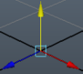
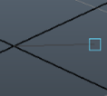
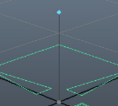
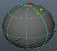
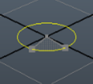
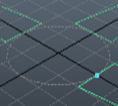
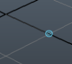
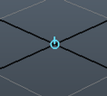
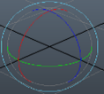
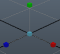

002-OpenMaya基础知识#
1. OpenMaya API名称约定#
MFN - 任何具有此前缀的类都是用于对特定类型的MObject进行操作的函数集
MIt - 这些类是迭代器和在MObject上像操作函数集一样
MPx - 具有此前缀的类都是代理，API 类旨在派生并创建自己的对象类型
M类 - 这些类中的大多数都是封装类，尽管还有其他类
2. OpenMaya的基本操作#
import maya.OpenMaya as om
import maya.cmds as cmds
# 获取所选的物体
m_sel = om.MSelectionList()
om.MGlobal.getActiveSelectionList(m_sel)
sel_iter = om.MItSelectionList(m_sel)
while not sel_iter.isDone():
dag = sel_iter.getDagPath()
print(dag) # 打印transform的名称
sel_iter.next()
# 列出所选择的物体
msel = om.MSelectionList()
mglb = om.MGlobal()
mglb.getActiveSelectionList(msel) # 把选择的物体名称添加到SelectionList集合
mdagpath = om.MDagPath()
mobj = om.MObject()
mfndag = om.MFnDagNode()
for i in range(msel.length()):
msel.getDagPath(i,mdagpath)
msel.getDependNode(i,mobj)
mfndag.setObject(mdagpath)
print(mobj.apiTypeStr()) # 打印物体的类型名称
print(mdagpath.fullPathName()) # 打印物体的长名称
print(om.MFnDependencyNode(mobj).name()) # 打印物体的短名称
print(mfndag.name()) # 打印物体的短名称
# 选择物体 如果已经存在选择物体就会加叠加选择
mglb.selectByName("pSphereShape1")
mglb.selectByName("*Sphere*") # 选择名称中带有 Sphere 的所有内容
# 先在场景创建钟 polyPlane模型
# 创建SelectionList SelectionList是一个MObject的集
mSel = om.MSelectionList()
mSel.add(cmds.ls(sl=1)[0]) # 把选择的物体名称添加到SelectionList集合
print(mSel.length()) # 打印SelectionList集合的大小
# 创建MObject 和 MDagPath 对象
mObj = om.MObject()
mDagPath =om.MDagPath()
# 获取SelectionList内的第一个对象的 MObject 和 MDagPath
mSel.getDependNode(0,mObj)
mSel.getDagPath(0,mDagPath)
print(mDagPath.fullPathName()) # 打印 Dag节点的长名称
# 获取shape的MFnMesh对象
mfnMesh = om.MFnMesh(mDagPath)
print(mfnMesh.fullPathName()) # 打印shape节点的长名称
# 获取到dependency节点 (类似于DAG节点的Transform节点)
mFnDependNode = om.MFnDependencyNode(mObj)
print(mFnDependNode.name()) # 打印节点的（短）名称
# 获取shape节点的存在连接的属性名称 （在OpenMaya中称为Plug 节点插头）
mPlugArray = om.MPlugArray() # 插头的数组
mfnMesh.getConnections(mPlugArray) # 获取存在连接的插头
print(mPlugArray[0].name()) # 打印插头的名称
print(mPlugArray[1].name())
# 获取shape节点属性连接的对象节点属性 （实则是列出属性pPlaneShape1.inMesh的连接对象）
mPlugArray2 = om.MPlugArray()
mPlugArray[1].connectedTo(mPlugArray2,True,False)
print(mPlugArray2.length()) # 打印连接对象的插头集合的大小
print(mPlugArray2[0].name()) # 打印连接对象的插头名称
# 获取连接对象的MObject 和 dependency节点
mObj2 = mPlugArray2[0].node()
mFnDependNode2 = om.MFnDependencyNode(mObj2)
print(mFnDependNode2.name()) # 打印节点的名称
# 获取节点的属性的MPlug对象
mPlugWidth = mFnDependNode2.findPlug("width")
mPlugHeight = mFnDependNode2.findPlug("height")
# 打印获取到的节点属性值
print(mPlugWidth.asInt())
print(mPlugHeight.asInt())
# 设置节点属性的值
mPlugWidth.setInt(5)
mPlugHeight.setInt(5)
3. OpenMaya的迭代器#
常用的迭代器：
MItDag：作用于迭代DAG节点的层级结构
MItDependencyGraph：作用于迭代DG节点的链接
MItMeshEdge：作用于迭代mesh节点的边
MItMeshVertex：作用于迭代mesh节点的顶点
MItMeshPolygon：作用于迭代mesh节点的面
MItSurfaceCV：作用于迭代surface的CV点
import maya.OpenMaya as om
"""
DAG迭代器的两种搜索模式：depth first search （深度优先） 和 breadth first search （广度优先）
例如：
DAG结构图
A
|
B
/ \
C D
/ \ / \
E F G H
两种搜索的顺序
深度优先：A->B->C->E->F->D->G->H
广度优先：A->B->C->D->E->F->G->H
"""
# 针对场景中所有DAG节点的迭代 打印一些信息
dagIterator = om.MItDag(om.MItDag.kDepthFirst,om.MFn.kInvalid)
dagNodeFn = om.MFnDagNode()
while(not dagIterator.isDone()):
cObj = dagIterator.currentItem() # 获取当前的mobject
depth = dagIterator.depth() # 获取层级结构的深度
dagNodeFn.setObject(cObj)
name = dagNodeFn.name() # 获取DAG节点的名称
objType = cObj.apiTypeStr() # 获取DAG节点的类型
fullPathName = dagNodeFn.fullPathName() # 获取DAG节点的长名称
print("---->" * depth + name + " : " + objType)
#print(fullPathName)
dagIterator.next()
# 常用迭代器
# MItDag: 用以迭代dag节点的层级
# MItDependencyGraph: 用以迭代dg节点的连接
# MItMeshEdge: 用以迭代mesh的边
# MItMeshVertex: 用以迭代mesh的顶点
# MItMeshPolygon: 用以迭代mesh的面
# MItSurfaceCV: 用以迭代曲面的cv
4. OpenMaya操纵器（Manipulators）#
操纵器是一个使用 3D 图形元素绘制自身的节点，它响应用户事件。操纵器 用户事件转换为用于修改场景中其他节点的属性值的值。
基础操纵器的所有功能集均来自: MFnManip3D类
MFnFreePointTriadManip类（点操纵器）: 提供了一个可以移动到任何地方的点。它具有用于受约束的 x、y 和 z 移动的轴，并遵循网格捕捉、点捕捉和曲线捕捉。

MFnDirectionManip类（方向操纵器）: 允许指定从起点到操纵器位置的向量定义的方向。它使用 FreePointTriadManip 来指定向量相对于给定起点的终点。该操纵器生成从起点到终点的矢量。

MFnDistanceManip类（距离操纵器）: 许操纵被约束为沿线移动的点。计算从线的起点到操作点的距离值。该操纵器生成单个浮点值。缩放因子可用于确定操纵器在绘制时出现的时间。

MFnPointOnCurveManip类（点在曲线的操纵器）: 允许操纵被约束为沿曲线移动的点并指定u曲线参数值。此操纵器生成与曲线参数对应的单个浮点值。
MFnPointOnSurfaceManip类（点在曲面的操纵器）: 许操纵被约束为沿曲面移动的点并指定(u, v)曲面参数值。该操纵器生成两个与表面 (u, v) 参数相对应的浮点值。

MFnDiscManip类（光盘操纵器）: 允许旋转圆盘以指定围绕轴的旋转。该操纵器生成与旋转相对应的单个浮点值。

MFnCircleSweepManip类（圆圈扫描）: 允许操纵一个被约束为绕圆移动的点并指定扫角。该操纵器生成与扫描角相对应的单个浮点值。类似于 MFnDiscManip类，但它提供了更多用于指定旋转角度的选项

MFnToggleManip类（切换操纵器）: 允许在两种模式或开/关状态之间切换。它被画成一个有或没有点的圆圈。当模式开启时，圆点被绘制在圆圈中，当模式关闭时，圆点被绘制而没有点。该操纵器生成一个布尔值，对应于模式是打开还是关闭。

MFnStateManip类（状态操纵器）: 允许在多个状态之间切换。它被画成一个带有凹口的圆圈。每次单击圆圈都会增加状态的值。该操纵器生成一个与操纵器状态相对应的整数值。

MFnCurveSegmentManip类（曲线分段）: 允许操纵曲线上的两个点来指定曲线段。该操纵器生成两个浮点值，分别对应曲线段的起点和终点参数。
MFnRotateManip类（旋转操纵器）: 对应于 Maya 中内置的旋转操纵器，它允许操纵 3d 旋转矢量。操纵器由三个约束轴旋转环、一个视图旋转环和一个不可见的轨迹球组成，可让球体中沿任意方向旋转。它支持内置旋转操纵器的三种旋转模式：对象空间、全局和万向。它允许在 x、y、z 和观察轴上进行约束旋转。操纵器生成的矢量是适合输入到旋转接口的欧拉旋转。

MFnScaleManip类（缩放操纵器）: 对应于 Maya 中的内置缩放操纵器，它允许操纵相对的 x、y 和 z 缩放值。缩放操纵器提供了用于按比例缩放的中央手柄，以及用于在每个轴上进行非比例缩放的 x、y 和 z 轴手柄。操纵器生成适合输入到缩放接口的相对缩放矢量。
